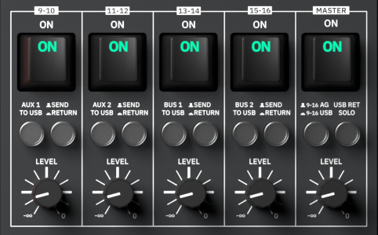

Input 9-16 and Digital Master
Within the Stereo Master Module, the 9–16 Section provides dedicated control over channels 9 to 16, grouped into stereo pairs. This section offers intuitive handling for summing and routing these pairs into the master bus with precision.

Key Features:
- Stereo Pairing:
- Channels 9–16 are grouped into four stereo pairs (9/10, 11/12, 13/14, and 15/16).
- On Button:
- Each stereo pair is equipped with an On Button to activate or mute its routing into the master bus.
- This allows you to selectively engage or disengage specific stereo pairs during mixing or performance.
- Volume Knob:
- Each stereo pair also features a Knob for adjusting its volume level before it is summed into the master bus.
- This enables precise control over the balance of these stereo channels within the overall mix.
Workflow Summary:
- Activate Stereo Pair: Press the On Button to send the stereo pair to the master bus.
- Adjust Volume: Use the Knob to set the desired level for the pair within the mix.
- Repeat for all four stereo pairs (9/10, 11/12, 13/14, 15/16) to build a cohesive stereo master mix.
This thoughtful design ensures that channels 9–16 integrate smoothly into your workflow, whether for detailed studio sessions or dynamic live performances.
Expanded Routing Explanation for Channels 9–16
The flexible routing options available for channels 9–16 apply similarly across the remaining stereo pairs, offering seamless integration with AUX 1/2 and the Stereo Busses 1/2. Below is a detailed breakdown:
Channels 9–10: AUX 1
- Button 1: Routes the AUX 1 signal to USB inputs 9/10, overriding the default analog inputs 9/10 from the back panel.
- Button 2: Selects the source:
- AUX Send Signal: Sends the dry AUX 1 send to the computer, perfect for using DAW plugins in real time.
- AUX Return Signal: Sends the processed AUX 1 return signal (e.g., built-in or external FX) to the USB interface for recording.
Channels 11–12: AUX 2
- Button 1: Routes the AUX 2 signal to USB inputs 11/12, bypassing the default analog inputs 11/12 from the back panel.
- Button 2: Selects the source:
- AUX Send Signal: Sends the dry AUX 2 send for real-time plugin processing.
- AUX Return Signal: Sends the processed AUX 2 return signal for capturing FX-processed audio.
Channels 13–14: BUS 1
- Button 1: Routes the BUS 1 signal to USB inputs 13/14, overriding the default analog inputs 13/14 from the back panel.
- Button 2: Selects the source:
- BUS Send Signal: Sends the dry BUS 1 send to the computer for plugin-based processing or further routing in the DAW.
- BUS Return Signal: Captures the processed BUS 1 return signal, ideal for recording final effects or summed outputs.
Channels 15–16: BUS 2
- Button 1: Routes the BUS 2 signal to USB inputs 15/16, replacing the default analog inputs 15/16.
- Button 2: Selects the source:
- BUS Send Signal: Sends the dry BUS 2 send to the computer for further processing or live plugin use.
- BUS Return Signal: Sends the processed BUS 2 return signal, capturing the finalized effects or summed signal.
Unified Workflow:
For each stereo pair (9/10, 11/12, 13/14, 15/16):
- Engage Button 1: Activates the routing of the specific AUX or BUS to the USB interface.
- Use Button 2: Choose between sending the dry Send Signal or the processed Return Signal to the computer.
This uniform routing logic ensures consistency across all channels, giving you comprehensive control over how AUXes and Busses interact with your DAW for mixing, processing, and recording. It’s designed to cater to diverse creative workflows, whether you're crafting raw audio for plugin processing or capturing fully processed outputs for final production.
Digital Master Section:
Precision Integration of Analog and Digital Workflows
The Digital Master Section offers innovative tools for seamlessly blending and controlling the analog and digital domains, ensuring that your workflow remains efficient and creative.
Master Button and knob
- The Master Button and knob allow you to mix the Stereo Master L and Stereo Master R channels from the USB interface into the analog summing bus of the MX Modular.
- This creates a powerful hybrid environment where digital mixes can be integrated directly with analog processing and summing.
Additional Buttons
- Button 1: Input Source Selection for Channels 9–16
- This button determines whether channels 9–16 are sourced from:
- The analog inputs on the back panel.
- The digital channels 9–16 from the USB interface.
- This feature provides flexibility to switch between analog and digital inputs, making it easy to incorporate DAW stems, external audio, or analog sources.
- This button determines whether channels 9–16 are sourced from:
- Button 2: USB RET SOLO
- When engaged, the USB RET SOLO button routes only the return signal from the digital master (Stereo Master L and R) of the USB interface to the analog summing bus.
- All other channels and inputs are muted in the mix, while:
- Direct outputs and sends from AUXes and BUSses remain active and intact.
- This setup allows for a highly focused scenario:
- You can process the master mix in your DAW using a mastering plugin in real-time.
- Simultaneously, you retain the ability to mix and tweak using all the MX Modular’s functionality, while monitoring only the processed signal returning from the DAW.
Use Case Example: Real-Time Mastering with Plugins
- Step 1: Enable the USB RET SOLO button.
- Step 2: Send the analog master mix from the MX Modular to your DAW via the USB interface.
- Step 3: Process the mix in your DAW using a mastering plugin or chain.
- Step 4: The processed signal returns via the USB interface, routed back into the MX Modular, allowing you to:
- Monitor the processed signal exclusively.
- Continue using the AUX and BUS sends/returns for additional external processing or monitoring setups.
Key Features Recap:
- Master Button and Potmeter: Mix the USB digital master return with the analog summing bus.
- Button 1: Toggle between analog and digital input sources for channels 9–16.
- USB RET SOLO Button: Solo the DAW-processed digital master return while maintaining all AUX and BUS functionality.
This system enhances creative control, particularly in hybrid analog-digital workflows, ensuring pristine audio integration and real-time monitoring with flexibility for processing and mixing.